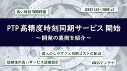
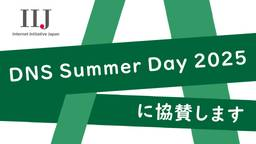

IIJ Engineers Blog
https://eng-blog.iij.ad.jp
IIJ Engineers Blogは、開発・運用の現場から、IIJのエンジニアが技術的な情報や取り組みについて 執筆する公式ブログです。
フィード
グランプリ受賞！「Ditto」が Interop Tokyo 2025「Best of Show Award」で栄冠！
IIJ Engineers Blog
2025 年 6 月 11 日～13 日に幕張メッセで開催されたイベント「Interop Tokyo 2025」にて、IIJ が出展した「Ditto」が、「Best of Show Award（IoT...
5日前

PTP 高精度時刻同期サービスを始めました 6
6
IIJ Engineers Blog
今回はIIJのグループ会社である、IIJエンジニアリングの土屋がサービスの裏話について執筆してくれた内容を紹介します。 サービス開発にあたり PTPをNTPのように使いたい！と思っても、そう簡単には導...
6日前

IIJはDNS Summer Day 2025に協賛します
IIJ Engineers Blog
2025年6月27日に開催される「DNS Summer Day 2025」に、IIJは協賛します。 IIJでは、DNSに関わるサービスを提供しており、本ブログでも、DNSに関わる記事を数多く公開してい...
7日前

「プログラマのための文字コード技術入門」IIJ図書館にあるオススメ技術書
IIJ Engineers Blog
プログラミング、あるいはより広くコンピュータを使用するにあたって避けては通れない文字コード。 しかし、何となくでやり過ごし体系的に学習したことが無い方も多いのではないでしょうか。 書籍情報 https...
13日前
IIJ図書館のご紹介
IIJ Engineers Blog
IIJ社内には、 IIJの社員が社内で自主的に運用する「IIJ図書館」があります。 IIJ図書館とは IIJ図書館は社内から図書の寄贈を募り、社内に「図書館」を作るプロジェクトです。蔵書の管理、貸出シ...
13日前
Starlinkはワイドスターの代わりになるのか？考えてみた
IIJ Engineers Blog
Interop Tokyo 2025 で展示をしています Internet x Space Summit で展示をしています（小間番号：7B32）。来場の際にはぜひお立ち寄りください。 衛星電話サービ...
17日前
「Interop Tokyo 2025」に IIJ が出展！～次世代データセンター＆宇宙インターネット技術をご紹介～
IIJ Engineers Blog
IIJ は、2025 年 6 月 11 日～13 日に開催される国内最大級のインターネットテクノロジーイベント 「Interop Tokyo 2025」に出展します。 今回は、以下 2 つの特別企画エ...
24日前
IIJ、JANOG56松江でホストやります！となったお話
IIJ Engineers Blog
初めまして、IIJのimachanです。普段は中四国支店で働くネットワークエンジニアです。 そんな私が、ネットワーク界隈で有名なイベントにかかわることになりましたので、告知も兼ねて記事を書かせていただ...
1ヶ月前
エコパスタジアムでのWi-Fi導入～前回の経験を活かした改善
IIJ Engineers Blog
IIJエンジニアリングは、3月15日に静岡県のエコパスタジアムで開催されたジュビロ磐田×ヴェンフォーレ甲府の試合にて、ジュビロ磐田の運営スタッフ向けの臨時のWi-Fi接続サービスを提供しました。 前回...
2ヶ月前
注目の次世代デジタル証明書 “Verifiable Credentials” についてイベントで登壇します
IIJ Engineers Blog
IIJは、DID (Decentralized Identifier) と VC (Verifiable Credential) を専門とするスタートアップ企業 Receptさんとイベントを共催するこ...
3ヶ月前